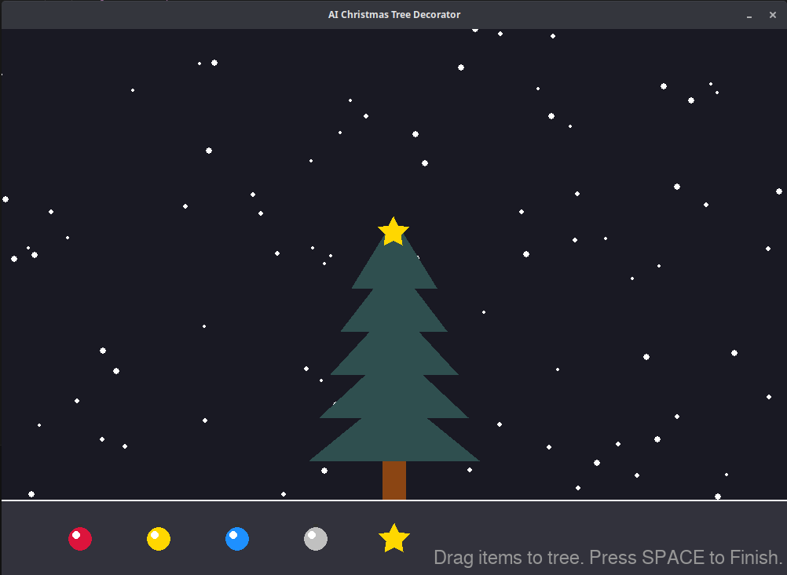
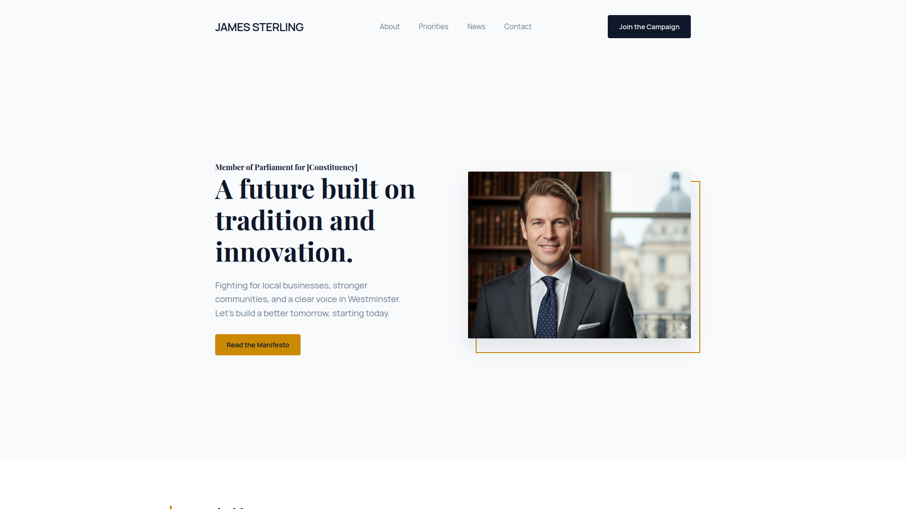

Gemini 3.0 rolls out - Will it DOOM US?
Google just rolled out Gemini 3 - It appears to be the best AI model yet. But will that help or damage Workers?
Thats a question we asked us today. Gemini 3 tops all other Models in the Benchmarks we looked at - here is one of them:

Source: blog.google
This would be great news, because most of you probably now that all of googles Models are completely free at https://aistudio.google.com.
But we want to show the biggest and a really important criticism against AI in general: it will take our jobs, and the only one they really benefit are the people who are already on the top.
We tested two practical examples, to see how easily AI can take a Developers job. Because the question is not "Will it take our jobs?" - but "When and how will it take our jobs?"
Source: aistudio.google.com
The game lets you decorate one of 3 trees. You have 5 deco objects to choose from, including a topper.
After you press SPACE to finsish, it rates you with an algorythm on how good the Tree looks.
I was surprised how exact gemini 3 did this. It gave me exactly what I asked for, while every other model always made something wrong - remember, we are always using the first output ever.
Source: aistudio.google.com
The AI did a good job here. I let it do a Portfolio website for a fictional politician from England.
It didnt do everything 100% correct: There are no pages for the About, Priorities, etc. sections, but it jumps to that point in the same page. We didn't specifiy that tho, so its alright.
I am also not sure if its intended that the image is out of its frame, but I kind of like the look.
Conclusion:
We are not "doomed" just because there is a new AI model. But it is definetly terrifying what's happening, and developers should be aware that they might need a second option.